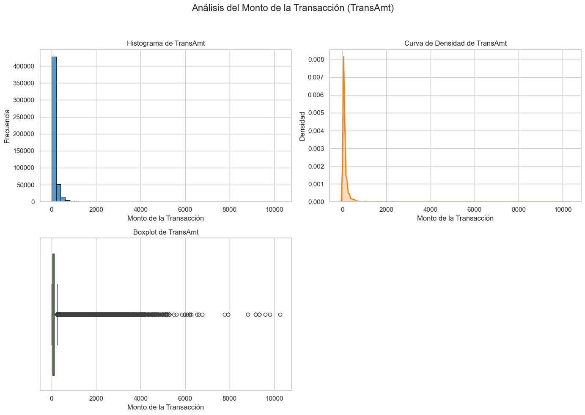
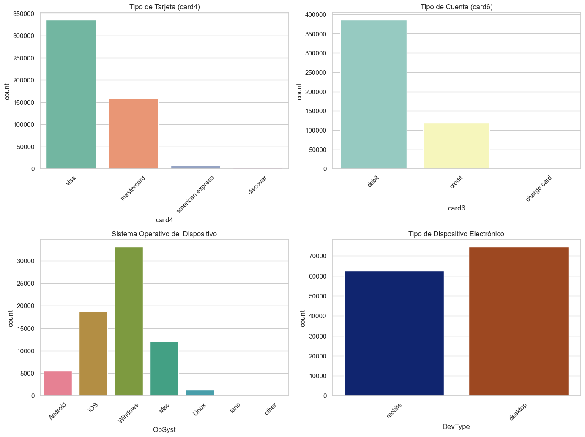
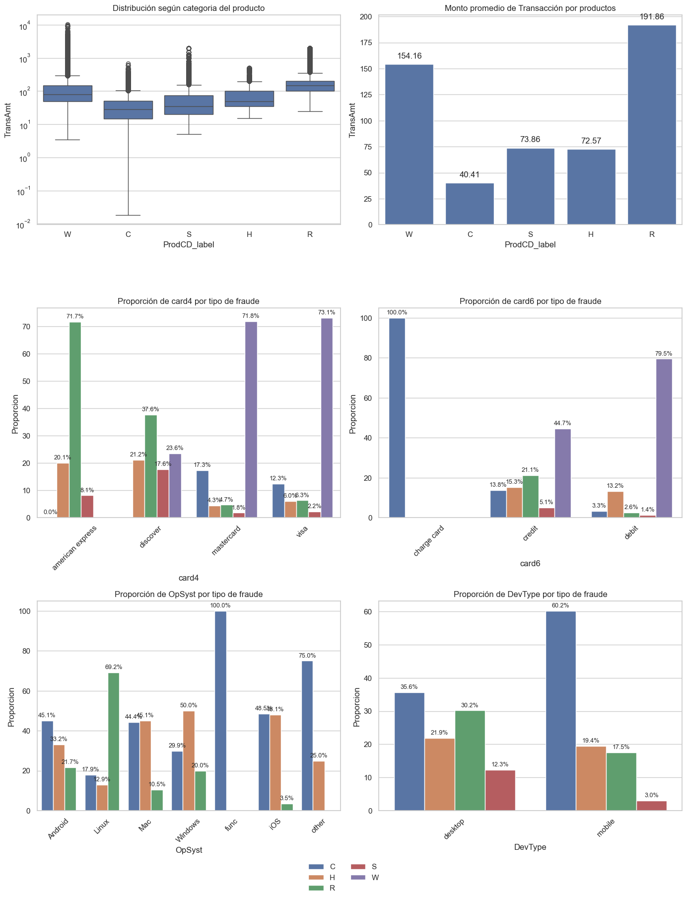
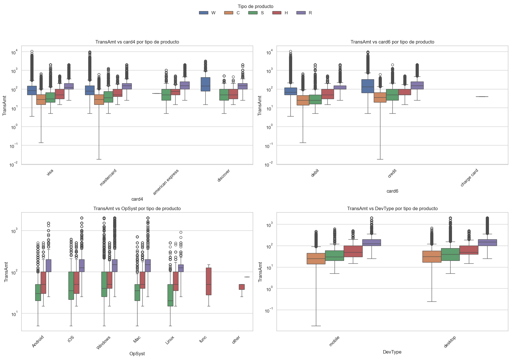

EDA Test_transaction#
Test_transaction#
# -----------------------------------------------------------
# 1. Paquetes necesarios para el análisis
# -----------------------------------------------------------
import pandas as pd
import numpy as np
import seaborn as sns
import matplotlib.pyplot as plt
from scipy.stats import ttest_ind
from scipy.stats import chi2_contingency, ttest_ind
# -----------------------------------------------------------------------
# 2. Cargar los datos de test_transaction desde nuestro disco duro local
# cambia la ruta a la ubicación de tu archivo CSV
# -----------------------------------------------------------------------
test_transaction = pd.read_csv(r"C:/Users/jthow/iCloudDrive/Documents/3_Maestria_Estadistica_UNINORTE/3_Tercer_Semestre/Machine_Learning/Parcial_Practico/fraude/test_transaction.csv")
# -----------------------------------------------------------------------
# 3. Inspeccionar los datos cargados
# -----------------------------------------------------------------------
test_transaction
---------------------------------------------------------------------------
FileNotFoundError Traceback (most recent call last)
Cell In[2], line 6
1 # -----------------------------------------------------------------------
2 # 2. Cargar los datos de test_transaction desde nuestro disco duro local
3 # cambia la ruta a la ubicación de tu archivo CSV
4 # -----------------------------------------------------------------------
----> 6 test_transaction = pd.read_csv(r"C:/Users/jthow/iCloudDrive/Documents/3_Maestria_Estadistica_UNINORTE/3_Tercer_Semestre/Machine_Learning/Parcial_Practico/fraude/test_transaction.csv")
8 # -----------------------------------------------------------------------
9 # 3. Inspeccionar los datos cargados
10 # -----------------------------------------------------------------------
12 test_transaction
File ~/miniconda3/envs/ml_venv/lib/python3.9/site-packages/pandas/io/parsers/readers.py:948, in read_csv(filepath_or_buffer, sep, delimiter, header, names, index_col, usecols, dtype, engine, converters, true_values, false_values, skipinitialspace, skiprows, skipfooter, nrows, na_values, keep_default_na, na_filter, verbose, skip_blank_lines, parse_dates, infer_datetime_format, keep_date_col, date_parser, date_format, dayfirst, cache_dates, iterator, chunksize, compression, thousands, decimal, lineterminator, quotechar, quoting, doublequote, escapechar, comment, encoding, encoding_errors, dialect, on_bad_lines, delim_whitespace, low_memory, memory_map, float_precision, storage_options, dtype_backend)
935 kwds_defaults = _refine_defaults_read(
936 dialect,
937 delimiter,
(...)
944 dtype_backend=dtype_backend,
945 )
946 kwds.update(kwds_defaults)
--> 948 return _read(filepath_or_buffer, kwds)
File ~/miniconda3/envs/ml_venv/lib/python3.9/site-packages/pandas/io/parsers/readers.py:611, in _read(filepath_or_buffer, kwds)
608 _validate_names(kwds.get("names", None))
610 # Create the parser.
--> 611 parser = TextFileReader(filepath_or_buffer, **kwds)
613 if chunksize or iterator:
614 return parser
File ~/miniconda3/envs/ml_venv/lib/python3.9/site-packages/pandas/io/parsers/readers.py:1448, in TextFileReader.__init__(self, f, engine, **kwds)
1445 self.options["has_index_names"] = kwds["has_index_names"]
1447 self.handles: IOHandles | None = None
-> 1448 self._engine = self._make_engine(f, self.engine)
File ~/miniconda3/envs/ml_venv/lib/python3.9/site-packages/pandas/io/parsers/readers.py:1705, in TextFileReader._make_engine(self, f, engine)
1703 if "b" not in mode:
1704 mode += "b"
-> 1705 self.handles = get_handle(
1706 f,
1707 mode,
1708 encoding=self.options.get("encoding", None),
1709 compression=self.options.get("compression", None),
1710 memory_map=self.options.get("memory_map", False),
1711 is_text=is_text,
1712 errors=self.options.get("encoding_errors", "strict"),
1713 storage_options=self.options.get("storage_options", None),
1714 )
1715 assert self.handles is not None
1716 f = self.handles.handle
File ~/miniconda3/envs/ml_venv/lib/python3.9/site-packages/pandas/io/common.py:863, in get_handle(path_or_buf, mode, encoding, compression, memory_map, is_text, errors, storage_options)
858 elif isinstance(handle, str):
859 # Check whether the filename is to be opened in binary mode.
860 # Binary mode does not support 'encoding' and 'newline'.
861 if ioargs.encoding and "b" not in ioargs.mode:
862 # Encoding
--> 863 handle = open(
864 handle,
865 ioargs.mode,
866 encoding=ioargs.encoding,
867 errors=errors,
868 newline="",
869 )
870 else:
871 # Binary mode
872 handle = open(handle, ioargs.mode)
FileNotFoundError: [Errno 2] No such file or directory: 'C:/Users/jthow/iCloudDrive/Documents/3_Maestria_Estadistica_UNINORTE/3_Tercer_Semestre/Machine_Learning/Parcial_Practico/fraude/test_transaction.csv'
TEST TRANSACTION
Estructura de la Base de Datos Filas y Columnas:
La base de datos contiene 506,691 filas y 393 columnas. Esto indica un conjunto de datos bastante grande y complejo. Columnas Principales:
TransactionID: Un identificador único para cada transacción. Es crucial para rastrear y referenciar transacciones individuales. TransactionDT: La fecha y hora de la transacción, representada como un número entero. Este campo es esencial para el análisis temporal. TransactionAmt: El monto de la transacción. Es una variable continua que puede ser útil para análisis financieros y detección de fraudes. ProductCD: Un código que representa el tipo de producto involucrado en la transacción. Puede ser categórico y útil para segmentar los datos por tipo de producto. card1 a card6: Información relacionada con la tarjeta utilizada en la transacción. Estos campos pueden incluir detalles como el número de tarjeta (posiblemente encriptado), el tipo de tarjeta, el emisor, etc. V330 a V339: Estas columnas parecen ser variables adicionales, posiblemente características anonimizadas o codificadas. Los valores NaN indican que estas columnas pueden tener datos faltantes o no aplicables para ciertas transacciones. Conclusión Esta base de datos ofrece una rica fuente de información para el análisis transaccional. A través de un EDA detallado y consideraciones estadísticas, se pueden extraer insights valiosos que pueden informar decisiones estratégicas, mejorar la detección de fraudes y optimizar las operaciones comerciales.
# -----------------------------------------------------------------------
# 4. Cargar los datos de test_identity desde nuestro disco duro local
# cambia la ruta a la ubicación de tu archivo CSV
# -----------------------------------------------------------------------
test_identity = pd.read_csv(r"C:/Users/jthow/iCloudDrive/Documents/3_Maestria_Estadistica_UNINORTE/3_Tercer_Semestre/Machine_Learning/Parcial_Practico/fraude/test_identity.csv")
# -----------------------------------------------------------------------
# 5. Inspeccionar los datos cargados
# -----------------------------------------------------------------------
test_identity
| TransactionID | id-01 | id-02 | id-03 | id-04 | id-05 | id-06 | id-07 | id-08 | id-09 | ... | id-31 | id-32 | id-33 | id-34 | id-35 | id-36 | id-37 | id-38 | DeviceType | DeviceInfo | |
|---|---|---|---|---|---|---|---|---|---|---|---|---|---|---|---|---|---|---|---|---|---|
| 0 | 3663586 | -45.0 | 280290.0 | NaN | NaN | 0.0 | 0.0 | NaN | NaN | NaN | ... | chrome 67.0 for android | NaN | NaN | NaN | F | F | T | F | mobile | MYA-L13 Build/HUAWEIMYA-L13 |
| 1 | 3663588 | 0.0 | 3579.0 | 0.0 | 0.0 | 0.0 | 0.0 | NaN | NaN | 0.0 | ... | chrome 67.0 for android | 24.0 | 1280x720 | match_status:2 | T | F | T | T | mobile | LGLS676 Build/MXB48T |
| 2 | 3663597 | -5.0 | 185210.0 | NaN | NaN | 1.0 | 0.0 | NaN | NaN | NaN | ... | ie 11.0 for tablet | NaN | NaN | NaN | F | T | T | F | desktop | Trident/7.0 |
| 3 | 3663601 | -45.0 | 252944.0 | 0.0 | 0.0 | 0.0 | 0.0 | NaN | NaN | 0.0 | ... | chrome 67.0 for android | NaN | NaN | NaN | F | F | T | F | mobile | MYA-L13 Build/HUAWEIMYA-L13 |
| 4 | 3663602 | -95.0 | 328680.0 | NaN | NaN | 7.0 | -33.0 | NaN | NaN | NaN | ... | chrome 67.0 for android | NaN | NaN | NaN | F | F | T | F | mobile | SM-G9650 Build/R16NW |
| ... | ... | ... | ... | ... | ... | ... | ... | ... | ... | ... | ... | ... | ... | ... | ... | ... | ... | ... | ... | ... | ... |
| 141902 | 4170230 | -20.0 | 473365.0 | NaN | NaN | 0.0 | 0.0 | NaN | NaN | NaN | ... | chrome 71.0 for android | NaN | NaN | NaN | F | F | T | F | mobile | SM-J700M |
| 141903 | 4170233 | -5.0 | 489917.0 | 0.0 | 0.0 | -4.0 | -32.0 | NaN | NaN | 0.0 | ... | chrome 71.0 for android | NaN | NaN | NaN | F | F | T | F | mobile | SM-J320M |
| 141904 | 4170234 | -5.0 | 110081.0 | NaN | NaN | 22.0 | -31.0 | NaN | NaN | NaN | ... | mobile safari 10.0 | 32.0 | 1334x750 | match_status:2 | T | F | F | T | mobile | iOS Device |
| 141905 | 4170236 | -45.0 | 266704.0 | NaN | NaN | -3.0 | -10.0 | NaN | NaN | NaN | ... | chrome 43.0 for android | NaN | NaN | NaN | F | F | T | F | mobile | ALE-L23 Build/HuaweiALE-L23 |
| 141906 | 4170239 | -10.0 | 692090.0 | 0.0 | 0.0 | 0.0 | 0.0 | NaN | NaN | 0.0 | ... | samsung browser 8.2 | NaN | NaN | NaN | F | F | T | F | mobile | SAMSUNG |
141907 rows × 41 columns
Estructura de la Base de Datos Filas y Columnas:
La base de datos contiene 141,907 filas y 41 columnas. Esto indica un conjunto de datos moderadamente grande. Columnas Principales:
TransactionID: Un identificador único para cada transacción. Es crucial para rastrear y referenciar transacciones individuales. id-01 a id-38: Estas columnas parecen ser identificadores o características adicionales relacionadas con la transacción. Algunas de estas columnas tienen valores numéricos, mientras que otras tienen valores categóricos o booleanos (T/F). DeviceType: Indica el tipo de dispositivo utilizado en la transacción (por ejemplo, “mobile”, “desktop”). Esta información es útil para segmentar el análisis por tipo de dispositivo. DeviceInfo: Proporciona detalles adicionales sobre el dispositivo, como el modelo y el sistema operativo. Esto puede ser útil para identificar patrones específicos de dispositivos. esta es un commplemento de la base anterior trabajada.
# -----------------------------------------------------------------------
# 7. Paquetes necesarios para medir el tiempo de ejecución
# -----------------------------------------------------------------------
import time
import pandas as pd
# Lista para almacenar los tiempos de ejecución
execution_times = []
#-------------------------------------------------------------------------
# 8. Fusionar los dos conjuntos de datos test_transaction y test_identity en uno solo para redefinir FD_test
#-------------------------------------------------------------------------
start_time = time.time() # Iniciar el cronómetro
FD_test = pd.merge(test_transaction, test_identity, on='TransactionID', how='left')
end_time = time.time() # Detener el cronómetro
elapsed_time = end_time - start_time
execution_times.append(("Fusión de DataFrames", elapsed_time))
#-------------------------------------------------------------------------
# 7. Guardar el DataFrame fusionado en un archivo CSV en la ruta especificada
#-------------------------------------------------------------------------
start_time = time.time() # Iniciar el cronómetro
FD_test.to_csv("C:/Users/jthow/iCloudDrive/Documents/3_Maestria_Estadistica_UNINORTE/3_Tercer_Semestre/Machine_Learning/Parcial_Practico/FD_test.csv", index=False)
end_time = time.time() # Detener el cronómetro
elapsed_time = end_time - start_time
execution_times.append(("Guardado del CSV", elapsed_time))
#-------------------------------------------------------------------------
# 8. Inspeccionar los datos fusionados
#-------------------------------------------------------------------------
start_time = time.time() # Iniciar el cronómetro
print(FD_test.head()) # Muestra las primeras filas del DataFrame
end_time = time.time() # Detener el cronómetro
elapsed_time = end_time - start_time
execution_times.append(("Inspección de datos", elapsed_time))
#-------------------------------------------------------------------------
# 9. Mostrar los tiempos de ejecución en una tabla
# Convertir los tiempos a minutos y segundos
#-------------------------------------------------------------------------
formatted_times = [(desc, f"{int(t // 60)} minutos y {int(t % 60)} segundos") for desc, t in execution_times]
# ----------------------------------------------------------
# 10. Crear un DataFrame para mostrar los tiempos
# ----------------------------------------------------------
times_df = pd.DataFrame(formatted_times, columns=["Descripción", "Tiempo Transcurrido"])
print(times_df)
TransactionID TransactionDT TransactionAmt ProductCD card1 card2 \
0 3663549 18403224 31.95 W 10409 111.0
1 3663550 18403263 49.00 W 4272 111.0
2 3663551 18403310 171.00 W 4476 574.0
3 3663552 18403310 284.95 W 10989 360.0
4 3663553 18403317 67.95 W 18018 452.0
card3 card4 card5 card6 ... id-31 id-32 id-33 id-34 id-35 \
0 150.0 visa 226.0 debit ... NaN NaN NaN NaN NaN
1 150.0 visa 226.0 debit ... NaN NaN NaN NaN NaN
2 150.0 visa 226.0 debit ... NaN NaN NaN NaN NaN
3 150.0 visa 166.0 debit ... NaN NaN NaN NaN NaN
4 150.0 mastercard 117.0 debit ... NaN NaN NaN NaN NaN
id-36 id-37 id-38 DeviceType DeviceInfo
0 NaN NaN NaN NaN NaN
1 NaN NaN NaN NaN NaN
2 NaN NaN NaN NaN NaN
3 NaN NaN NaN NaN NaN
4 NaN NaN NaN NaN NaN
[5 rows x 433 columns]
Descripción Tiempo Transcurrido
0 Fusión de DataFrames 0 minutos y 18 segundos
1 Guardado del CSV 2 minutos y 18 segundos
2 Inspección de datos 0 minutos y 0 segundos
La tabla presentada muestra un extracto de un conjunto de datos transaccionales con 5 filas y 433 columnas, proporcionando una visión detallada de diversas características de las transacciones. Cada fila representa una transacción única identificada por TransactionID, con columnas adicionales que incluyen la fecha y hora de la transacción (TransactionDT), el monto de la transacción (TransactionAmt), el tipo de producto (ProductCD), y detalles de la tarjeta utilizada (card1 a card6). Además, la tabla incluye identificadores numéricos adicionales (id-01 a id-38), tipo de dispositivo (DeviceType) e información específica del dispositivo (DeviceInfo). Los datos muestran una variedad de valores, incluyendo algunos faltantes (NaN), lo que sugiere la necesidad de manejo de datos faltantes. El proceso de fusión de DataFrames tomó 18 segundos, mientras que la guardar el archivo CSV tomó 2 minutos y 18 segundos, y la inspección de datos se realizó en menos de un segundo. En conjunto, esta tabla ofrece una rica fuente de información para el análisis transaccional, destacando la diversidad de dispositivos y sistemas operativos utilizados, así como la presencia de datos faltantes que deben ser considerados en cualquier análisis posterior.
#-------------------------------------------------------------------------
# 11. Importar los paquetes necesarios
#-------------------------------------------------------------------------
import zipfile
import pandas as pd
import time
#-------------------------------------------------------------------------
# 12. Leer el archivo CSV 'FD2.csv' desde el ZIP
# Ruta al archivo ZIP
#-------------------------------------------------------------------------
zip_path = "C:/Users/jthow/iCloudDrive/Documents/3_Maestria_Estadistica_UNINORTE/3_Tercer_Semestre/Machine_Learning/Parcial_Practico/Fraude_Data_FD1_FD2.zip"
#-------------------------------------------------------------------------
# 13. Lista para almacenar los tiempos de ejecución
# --------------------------------------------------------------------------
execution_times = []
start_time = time.time() # Iniciar el cronómetro
with zipfile.ZipFile(zip_path, 'r') as zip_ref:
with zip_ref.open('FD2.csv') as file:
FD2 = pd.read_csv(file)
end_time = time.time() # Detener el cronómetro
elapsed_time = end_time - start_time
execution_times.append(("Lectura del CSV", elapsed_time))
#-------------------------------------------------------------------------
# 14. Mostrar el DataFrame FD2
#-------------------------------------------------------------------------
start_time = time.time() # Iniciar el cronómetro
print(FD2.head()) # Muestra las primeras filas del DataFrame
end_time = time.time() # Detener el cronómetro
elapsed_time = end_time - start_time
execution_times.append(("Visualización del DataFrame", elapsed_time))
#-------------------------------------------------------------------------
# 15. Mostrar los tiempos de ejecución en una tabla
# Convertir los tiempos a minutos y segundos
#-------------------------------------------------------------------------
formatted_times = [(desc, f"{int(t // 60)} minutos y {int(t % 60)} segundos") for desc, t in execution_times]
#-------------------------------------------------------------------------
# 16. Crear un DataFrame para mostrar los tiempos
#-------------------------------------------------------------------------
times_df = pd.DataFrame(formatted_times, columns=["Descripción", "Tiempo Transcurrido"])
print("\nTiempos de ejecución:")
print(times_df)
TransID TransDT TransAmt ProdCD card1 card2 card3 card4 card5 \
0 3663549 18403224 31.95 W 10409 111.0 150.0 visa 226.0
1 3663550 18403263 49.00 W 4272 111.0 150.0 visa 226.0
2 3663551 18403310 171.00 W 4476 574.0 150.0 visa 226.0
3 3663552 18403310 284.95 W 10989 360.0 150.0 visa 166.0
4 3663553 18403317 67.95 W 18018 452.0 150.0 mastercard 117.0
card6 ... id-31 id-32 id-33 id-34 id-35 id-36 id-37 id-38 DevType \
0 debit ... NaN NaN NaN NaN NaN NaN NaN NaN NaN
1 debit ... NaN NaN NaN NaN NaN NaN NaN NaN NaN
2 debit ... NaN NaN NaN NaN NaN NaN NaN NaN NaN
3 debit ... NaN NaN NaN NaN NaN NaN NaN NaN NaN
4 debit ... NaN NaN NaN NaN NaN NaN NaN NaN NaN
DevInfo
0 NaN
1 NaN
2 NaN
3 NaN
4 NaN
[5 rows x 433 columns]
Tiempos de ejecución:
Descripción Tiempo Transcurrido
0 Lectura del CSV 1 minutos y 9 segundos
1 Visualización del DataFrame 0 minutos y 0 segundos
Número de observaciones (reemplazar a apartir de aquí con el dataframe - test)
Al explorar este extenso conjunto de datos de 433 columnas, encontramos numerosos valores faltantes dispersos en múltiples características. Los datos transaccionales muestran información financiera (TransAmt), diversos detalles de tarjetas (card1-card6), códigos de productos y múltiples características de ID. Al examinar las fechas de transacción (TransDT), identificamos patrones temporales en las actividades financieras. El análisis inicial muestra una estructura compleja con diversos tipos de datos que requieren preprocesamiento específico. La naturaleza de los datos sugiere un problema de detección de fraude, donde se observa un desequilibrio de clases característico. Las columnas como card4 y card6 indican el tipo de tarjeta y método de pago, proporcionando contexto valioso para entender los patrones de transacción. La presencia de numerosas columnas id-XX sugiere características derivadas o anónimas que podrían contener información relevante para identificar transacciones fraudulentas.
#-------------------------------------------------------------------------
# 17. Importar los paquetes necesarios
#-------------------------------------------------------------------------
import pandas as pd
import time
#-------------------------------------------------------------------------
# 18. Calcular el número de observaciones no nulas y el porcentaje de valores faltantes
# Lista para almacenar los tiempos de ejecución
#-------------------------------------------------------------------------
execution_times = []
start_time = time.time() # Iniciar el cronómetro
#-------------------------------------------------------------------------
# 19. Calcular el número de observaciones no nulas y el porcentaje de valores faltantes
# -------------------------------------------------------------------------
num_obs = FD2.count()
#-------------------------------------------------------------------------
# 20. Total de filas (observaciones en el DataFrame)
#-------------------------------------------------------------------------
total_rows = FD2.shape[0]
#-------------------------------------------------------------------------
# 21. Calcular el porcentaje de valores faltantes por columna
#-------------------------------------------------------------------------
missing_pct = ((total_rows - num_obs) / total_rows * 100).round(2)
#-------------------------------------------------------------------------
# 22. Unir en un solo DataFrame
# --------------------------------------------------------------------------
obs_summary = pd.DataFrame({
'non_null_count': num_obs,
'missing_percentage': missing_pct
})
end_time = time.time() # Detener el cronómetro
elapsed_time = end_time - start_time
execution_times.append(("Cálculo de observaciones y valores faltantes", elapsed_time))
#-------------------------------------------------------------------------
# 23. Mostrar el resumen de observaciones
#-------------------------------------------------------------------------
start_time = time.time() # Iniciar el cronómetro
print(obs_summary)
end_time = time.time() # Detener el cronómetro
elapsed_time = end_time - start_time
execution_times.append(("Visualización del resumen de observaciones", elapsed_time))
#-------------------------------------------------------------------------
# 24. Mostrar los tiempos de ejecución en una tabla
# Convertir los tiempos a minutos y segundos
#-------------------------------------------------------------------------
formatted_times = [(desc, f"{int(t // 60)} minutos y {int(t % 60)} segundos") for desc, t in execution_times]
#-------------------------------------------------------------------------
# 25. Crear un DataFrame para mostrar los tiempos
#-------------------------------------------------------------------------
times_df = pd.DataFrame(formatted_times, columns=["Descripción", "Tiempo Transcurrido"])
print("\nTiempos de ejecución:")
print(times_df)
non_null_count missing_percentage
TransID 506691 0.00
TransDT 506691 0.00
TransAmt 506691 0.00
ProdCD 506691 0.00
card1 506691 0.00
... ... ...
id-36 136977 72.97
id-37 136977 72.97
id-38 136977 72.97
DevType 136931 72.98
DevInfo 115057 77.29
[433 rows x 2 columns]
Tiempos de ejecución:
Descripción Tiempo Transcurrido
0 Cálculo de observaciones y valores faltantes 0 minutos y 2 segundos
1 Visualización del resumen de observaciones 0 minutos y 0 segundos
Nuestro grupo analizó la estructura del conjunto de datos de detección de fraude y encontró que contiene 506,691 transacciones con 433 variables. El conjunto presenta un patrón interesante de valores faltantes: mientras las columnas principales como TransID, TransDT, TransAmt, ProdCD y card1 están completas (0% de valores faltantes), observamos un incremento gradual en el porcentaje de datos ausentes en otras características. Las variables más afectadas incluyen DevInfo con 77.29% de valores faltantes, seguido por DevType con 72.98%, y varias columnas de identificación (id-36, id-37, id-38) con aproximadamente 72.97% de datos ausentes. Este patrón sugiere una estructura de datos donde ciertas características solo son relevantes para tipos específicos de transacciones, lo que explica la naturaleza sistemática de los valores faltantes. El análisis de estos patrones será crucial para desarrollar estrategias efectivas de modelado en nuestro proyecto de detección de fraude.
#-------------------------------------------------------------------------
# 26. Importar los paquetes necesarios
#-------------------------------------------------------------------------
import pandas as pd
import time
#-------------------------------------------------------------------------
# 27. Calcular estadísticas básicas para columnas numéricas
#-------------------------------------------------------------------------
#--------------------------------------------------------------------------
# 28. Lista para almacenar los tiempos de ejecución
#--------------------------------------------------------------------------
execution_times = []
start_time = time.time() # Iniciar el cronómetro
# Calcular estadísticas básicas para columnas numéricas
estadisticas_numericas = FD2.describe()
print("Estadísticas básicas para columnas numéricas:")
print(estadisticas_numericas)
end_time = time.time() # Detener el cronómetro
elapsed_time = end_time - start_time
execution_times.append(("Cálculo de estadísticas numéricas", elapsed_time))
#-------------------------------------------------------------------------
# 29. Filtrar solo columnas numéricas y calcular estadísticas para columnas no numéricas
#-------------------------------------------------------------------------
start_time = time.time() # Iniciar el cronómetro
#--------------------------------------------------------------------------
# 30. Filtrar solo columnas numéricas
#--------------------------------------------------------------------------
columnas_numericas = FD2.select_dtypes(include=['number'])
#--------------------------------------------------------------------------
# 31. Calcular estadísticas para columnas no numéricas (categóricas)
#--------------------------------------------------------------------------
estadisticas_categoricas = FD2.describe(include='object')
print("\nEstadísticas básicas para columnas no numéricas:")
print(estadisticas_categoricas)
end_time = time.time() # Detener el cronómetro
elapsed_time = end_time - start_time
execution_times.append(("Cálculo de estadísticas categóricas", elapsed_time))
#-------------------------------------------------------------------------
# 32. Mostrar los tiempos de ejecución en una tabla
# Convertir los tiempos a minutos y segundos
#-------------------------------------------------------------------------
formatted_times = [(desc, f"{int(t // 60)} minutos y {int(t % 60)} segundos") for desc, t in execution_times]
#-------------------------------------------------------------------------
# 33. Crear un DataFrame para mostrar los tiempos
#-------------------------------------------------------------------------
times_df = pd.DataFrame(formatted_times, columns=["Descripción", "Tiempo Transcurrido"])
print("\nTiempos de ejecución:")
print(times_df)
Estadísticas básicas para columnas numéricas:
TransID TransDT TransAmt card1 \
count 5.066910e+05 5.066910e+05 506691.000000 506691.000000
mean 3.916894e+06 2.692994e+07 134.725568 9957.222175
std 1.462692e+05 4.756507e+06 245.779822 4884.960969
min 3.663549e+06 1.840322e+07 0.018000 1001.000000
25% 3.790222e+06 2.277154e+07 40.000000 6019.000000
50% 3.916894e+06 2.720466e+07 67.950000 9803.000000
75% 4.043566e+06 3.134856e+07 125.000000 14276.000000
max 4.170239e+06 3.421434e+07 10270.000000 18397.000000
card2 card3 card5 addr1 \
count 498037.000000 503689.000000 502144.000000 441082.000000
mean 363.735379 153.543409 200.162975 291.846514
std 158.688653 12.443013 40.562461 102.062730
min 100.000000 100.000000 100.000000 100.000000
25% 207.000000 150.000000 166.000000 204.000000
50% 369.000000 150.000000 226.000000 299.000000
75% 512.000000 150.000000 226.000000 330.000000
max 600.000000 232.000000 237.000000 540.000000
addr2 dist1 ... id-17 id-18 \
count 441082.000000 215474.000000 ... 135966.000000 50875.000000
mean 86.723412 87.065270 ... 191.070341 14.795735
std 2.987328 314.131694 ... 30.749535 2.318496
min 10.000000 0.000000 ... 100.000000 11.000000
25% 87.000000 3.000000 ... 166.000000 13.000000
50% 87.000000 8.000000 ... 166.000000 15.000000
75% 87.000000 20.000000 ... 225.000000 15.000000
max 102.000000 8081.000000 ... 228.000000 29.000000
id-19 id-20 id-21 id-22 id-24 \
count 135906.000000 135633.000000 5059.000000 5062.000000 4740.000000
mean 350.122982 408.886230 507.727021 15.336823 13.166667
std 139.140824 158.971756 227.371061 5.618032 3.222440
min 100.000000 100.000000 100.000000 11.000000 10.000000
25% 266.000000 256.000000 252.000000 14.000000 11.000000
50% 321.000000 484.000000 576.000000 14.000000 11.000000
75% 427.000000 549.000000 711.000000 14.000000 15.000000
max 670.000000 660.000000 854.000000 44.000000 26.000000
id-25 id-26 id-32
count 5039.000000 5047.000000 70671.000000
mean 332.043064 152.752923 26.217939
std 86.356683 31.916995 3.601046
min 100.000000 100.000000 8.000000
25% 321.000000 137.000000 24.000000
50% 321.000000 147.000000 24.000000
75% 355.000000 182.000000 32.000000
max 549.000000 216.000000 48.000000
[8 rows x 402 columns]
Estadísticas básicas para columnas no numéricas:
ProdCD card4 card6 P_Email R_Email M1 M2 M3 \
count 506691 503605 503684 437499 135870 330052 330052 330052
unique 5 4 3 60 60 2 2 2
top W visa debit gmail.com gmail.com T T T
freq 360987 334882 385021 207448 61738 330021 302855 266513
M4 M5 ... OpSyst id-31 id-33 id-34 \
count 268946 197059 ... 70659 136625 70671 72175
unique 3 2 ... 7 135 390 2
top M0 F ... Windows chrome 70.0 1920x1080 match_status:2
freq 161384 107664 ... 33038 16054 16868 72174
id-35 id-36 id-37 id-38 DevType DevInfo
count 136977 136977 136977 136977 136931 115057
unique 2 2 2 2 2 2226
top T F T F desktop Windows
freq 71650 133287 104697 95058 74403 44988
[4 rows x 31 columns]
Tiempos de ejecución:
Descripción Tiempo Transcurrido
0 Cálculo de estadísticas numéricas 0 minutos y 35 segundos
1 Cálculo de estadísticas categóricas 0 minutos y 20 segundos
El equipo de análisis examinó el conjunto de datos de detección de fraude y encontró estadísticas reveladoras para sus 506,691 transacciones. Las columnas numéricas muestran una amplia variación en montos de transacción (TransAmt) con un promedio de \(134.73 y valores que oscilan entre \)0.02 hasta $10,270. Observamos patrones interesantes en las variables de tarjetas, donde card3 muestra poca variabilidad (mayoría en 150) mientras que card1 y card2 presentan distribuciones más amplias. Entre las variables categóricas, el producto W es predominante (360,987 casos), las tarjetas visa son las más comunes (334,882), y el tipo de tarjeta más frecuente es débito (385,021). Gmail.com aparece como el proveedor de correo electrónico más utilizado tanto para remitentes como destinatarios. Varias columnas binarias (M1-M5) muestran desequilibrios significativos, y Windows es el sistema operativo más común. La resolución de pantalla predominante es 1920x1080, y la mayoría de los dispositivos son de escritorio. Estos patrones proporcionan insights valiosos para nuestro modelo de detección de fraude.
# Calcular asimetría y curtosis solo para las columnas numéricas
asimetria = columnas_numericas.skew()
curtosis = columnas_numericas.kurt()
print("/nAsimetría de las columnas numéricas:")
print(asimetria)
print("/nCurtosis de las columnas numéricas:")
print(curtosis)
/nAsimetría de las columnas numéricas:
TransID 8.576270e-16
TransDT -1.461656e-01
TransAmt 8.600886e+00
card1 -5.764174e-02
card2 -2.145919e-01
...
id-22 4.148039e+00
id-24 1.675694e+00
id-25 7.099090e-02
id-26 1.528108e-01
id-32 9.556708e-01
Length: 402, dtype: float64
/nCurtosis de las columnas numéricas:
TransID -1.200000
TransDT -1.265032
TransAmt 129.336773
card1 -1.139890
card2 -1.339535
...
id-22 15.663045
id-24 2.578678
id-25 0.499980
id-26 -0.568686
id-32 -0.871534
Length: 402, dtype: float64
Nuestro equipo analizó la distribución de las 402 variables numéricas del conjunto de datos de fraude, encontrando patrones importantes en su asimetría y curtosis. La mayoría de las variables muestran asimetría significativa, destacando especialmente TransAmt con un valor extremadamente alto (8.60), indicando una fuerte concentración de transacciones de bajo valor con algunas de valor muy alto. La curtosis confirma esta observación, mostrando que TransAmt tiene una distribución leptocúrtica extrema (129.34), muy alejada de una distribución normal. Variables como id-22 también presentan asimetría positiva considerable (4.15) y alta curtosis (15.66), sugiriendo distribuciones con valores atípicos significativos. En contraste, variables como TransID, TransDT, card1 y card2 muestran asimetría cercana a cero y curtosis negativa, indicando distribuciones más uniformes o incluso bimodales. Estos hallazgos sobre la forma de las distribuciones son cruciales para nuestras decisiones de preprocesamiento, incluyendo posibles transformaciones logarítmicas para variables altamente sesgadas antes de aplicar modelos de detección de fraude.
Variables del Conjunto de Datos de Fraude#
Variable |
Abreviación |
Descripción |
|---|---|---|
TransactionID |
TxnID |
ID única de la transacción. |
TransactionDT |
TxnDT |
Tiempo desde el inicio de los datos (en segundos). |
TransactionAmt |
TxnAmt |
Monto de la transacción. |
ProductCD |
ProdCD |
Código del tipo de producto financiero. |
card1 |
Card1 |
Identificador parcial del titular de la tarjeta. |
card2 |
Card2 |
Posible banco emisor de la tarjeta. |
card3 |
Card3 |
Región del emisor de la tarjeta. |
card4 |
Card4 |
Tipo de tarjeta (Visa, MasterCard, etc.). |
card5 |
Card5 |
Código del banco emisor. |
card6 |
Card6 |
Tipo de cuenta (crédito, débito). |
addr1 |
Addr1 |
Código de región del comprador. |
addr2 |
Addr2 |
Zona más específica (posiblemente país). |
dist1 |
Dist1 |
Distancia entre comprador y comerciante (posiblemente geográfica). |
dist2 |
Dist2 |
Otra medida de distancia (más específica). |
P_email domain |
P_Email |
Dominio del correo del comprador. |
R_email domain |
R_Email |
Dominio del correo del receptor. |
C1-C14 |
C1-C14 |
Variables agregadas sobre comportamiento del cliente. |
D1-D15 |
D1-D15 |
Variables relacionadas con tiempo desde eventos anteriores. |
M1-M9 |
M1-M9 |
Validaciones binarias (coincidencia de info, navegador, etc.). |
V1-V339 |
V1-V339 |
Variables encriptadas del comportamiento y características del usuario. |
Notas Importantes#
Las variables C, D, M y V son características complejas que requieren análisis detallado
Muchas variables pueden estar ofuscadas o encriptadas para proteger la privacidad
#-------------------------------------------------------------------------
# Extraer solo la primera fila de FD2.csv desde el ZIP
#-------------------------------------------------------------------------
with zipfile.ZipFile(zip_path, 'r') as zip_ref:
with zip_ref.open('FD2.csv') as file:
primera_fila_FD2 = pd.read_csv(file, nrows=1) # Solo una fila
print("\nPrimera fila del archivo FD2.csv:")
print(primera_fila_FD2.to_string(index=False))
Primera fila del archivo FD2.csv:
TransID TransDT TransAmt ProdCD card1 card2 card3 card4 card5 card6 addr1 addr2 dist1 dist2 P_Email R_Email C1 C2 C3 C4 C5 C6 C7 C8 C9 C10 C11 C12 C13 C14 D1 D2 D3 D4 D5 D6 D7 D8 D9 D10 D11 D12 D13 D14 D15 M1 M2 M3 M4 M5 M6 M7 M8 M9 V1 V2 V3 V4 V5 V6 V7 V8 V9 V10 V11 V12 V13 V14 V15 V16 V17 V18 V19 V20 V21 V22 V23 V24 V25 V26 V27 V28 V29 V30 V31 V32 V33 V34 V35 V36 V37 V38 V39 V40 V41 V42 V43 V44 V45 V46 V47 V48 V49 V50 V51 V52 V53 V54 V55 V56 V57 V58 V59 V60 V61 V62 V63 V64 V65 V66 V67 V68 V69 V70 V71 V72 V73 V74 V75 V76 V77 V78 V79 V80 V81 V82 V83 V84 V85 V86 V87 V88 V89 V90 V91 V92 V93 V94 V95 V96 V97 V98 V99 V100 V101 V102 V103 V104 V105 V106 V107 V108 V109 V110 V111 V112 V113 V114 V115 V116 V117 V118 V119 V120 V121 V122 V123 V124 V125 V126 V127 V128 V129 V130 V131 V132 V133 V134 V135 V136 V137 V138 V139 V140 V141 V142 V143 V144 V145 V146 V147 V148 V149 V150 V151 V152 V153 V154 V155 V156 V157 V158 V159 V160 V161 V162 V163 V164 V165 V166 V167 V168 V169 V170 V171 V172 V173 V174 V175 V176 V177 V178 V179 V180 V181 V182 V183 V184 V185 V186 V187 V188 V189 V190 V191 V192 V193 V194 V195 V196 V197 V198 V199 V200 V201 V202 V203 V204 V205 V206 V207 V208 V209 V210 V211 V212 V213 V214 V215 V216 V217 V218 V219 V220 V221 V222 V223 V224 V225 V226 V227 V228 V229 V230 V231 V232 V233 V234 V235 V236 V237 V238 V239 V240 V241 V242 V243 V244 V245 V246 V247 V248 V249 V250 V251 V252 V253 V254 V255 V256 V257 V258 V259 V260 V261 V262 V263 V264 V265 V266 V267 V268 V269 V270 V271 V272 V273 V274 V275 V276 V277 V278 V279 V280 V281 V282 V283 V284 V285 V286 V287 V288 V289 V290 V291 V292 V293 V294 V295 V296 V297 V298 V299 V300 V301 V302 V303 V304 V305 V306 V307 V308 V309 V310 V311 V312 V313 V314 V315 V316 V317 V318 V319 V320 V321 V322 V323 V324 V325 V326 V327 V328 V329 V330 V331 V332 V333 V334 V335 V336 V337 V338 V339 id-01 id-02 id-03 id-04 id-05 id-06 id-07 id-08 id-09 id-10 id-11 id-12 id-13 id-14 id-15 id-16 id-17 id-18 id-19 id-20 id-21 id-22 id-23 id-24 id-25 id-26 id-27 id-28 id-29 OpSyst id-31 id-32 id-33 id-34 id-35 id-36 id-37 id-38 DevType DevInfo
3663549 18403224 31.95 W 10409 111 150 visa 226 debit 170 87 1 NaN gmail.com NaN 6 6 0 0 3 4 0 0 6 0 5 1 115 6 419 419 27 398 27 NaN NaN NaN NaN 418 203 NaN NaN NaN 409 T T F NaN NaN F T T T 1 1 1 1 1 1 1 1 1 1 1 0 0 1 0 0 0 0 0 0 0 0 1 1 0 0 0 0 0 0 0 0 0 0 1 1 1 1 0 0 1 0 0 1 1 1 1 1 1 0 0 0 0 0 1 1 0 0 0 0 0 0 0 0 1 0 0 0 0 0 0 0 0 0 0 0 1 1 0 0 0 1 1 0 0 1 1 1 0 1 1 0 0 0 0 1 0 0 1 0 0 0 0 0 0 0 1 1 1 1 1 1 1 1 1 1 1 1 1 1 1 1 1 1 1 0 47.950001 0 0 47.950001 0 0 0 0 0 0 0 NaN NaN NaN NaN NaN NaN NaN NaN NaN NaN NaN NaN NaN NaN NaN NaN NaN NaN NaN NaN NaN NaN NaN NaN NaN NaN NaN NaN NaN NaN NaN NaN NaN NaN NaN NaN NaN NaN NaN NaN NaN NaN NaN NaN NaN NaN NaN NaN NaN NaN NaN NaN NaN NaN NaN NaN NaN NaN NaN NaN NaN NaN NaN NaN NaN NaN NaN NaN NaN NaN NaN NaN NaN NaN NaN NaN NaN NaN NaN NaN NaN NaN NaN NaN NaN NaN NaN NaN NaN NaN NaN NaN NaN NaN NaN NaN NaN NaN NaN NaN NaN NaN NaN NaN NaN NaN NaN NaN NaN NaN NaN NaN NaN NaN NaN NaN NaN NaN NaN NaN NaN NaN NaN NaN NaN NaN NaN NaN NaN NaN NaN NaN NaN NaN NaN NaN NaN NaN NaN NaN NaN 0 0 0 0 0 0 1 0 0 0 0 1 1 1 0 0 0 0 0 0 0 0 0 0 0 0 1 0 47.950001 0 0 47.950001 0 0 0 0 0 0 0 0 0 0 0 NaN NaN NaN NaN NaN NaN NaN NaN NaN NaN NaN NaN NaN NaN NaN NaN NaN NaN NaN NaN NaN NaN NaN NaN NaN NaN NaN NaN NaN NaN NaN NaN NaN NaN NaN NaN NaN NaN NaN NaN NaN NaN NaN NaN NaN NaN NaN NaN NaN NaN NaN NaN NaN NaN NaN NaN NaN NaN
El equipo de análisis examinó la estructura de la primera fila del archivo FD2.csv de detección de fraude, revelando la organización detallada de este extenso conjunto de datos. La fila muestra una transacción con ID 3663549, realizada en un momento específico (TransDT: 18403224), por un valor de $31.95, clasificada como producto tipo “W”, utilizando una tarjeta visa de débito. Los datos incluyen información específica de la tarjeta (card1-card6), direcciones (addr1, addr2), distancias (dist1, dist2), y correo electrónico del comprador (gmail.com). Observamos una estructura compleja con múltiples series de variables codificadas: columnas C1-C14 (posiblemente características del cliente), D1-D15 (datos de la transacción), M1-M9 (marcadores binarios donde predominan valores T y F), y un extenso conjunto de variables V1-V339 (muchas con valores binarios 0/1 o vacías). También notamos campos específicos de identificación (id-01 hasta id-38) y características del dispositivo (OpSyst, DevType, DevInfo), aunque muchos contienen valores NaN, consistente con los patrones de datos faltantes identificados previamente.
# Seleccionamos las seis variables del DataFrame FD2
variables_seleccionadas = ['addr2','TransAmt', 'card4', 'card6', 'OpSyst', 'DevType']
df_seleccionadas = FD2[variables_seleccionadas]
# Diccionario con descripciones de cada variable
descripciones = {
'addr2': 'Posible banco emisor de la tarjeta',
'TransAmt': 'Monto de la transacción',
'card4': 'Tipo de tarjeta (Visa, MasterCard, etc.)',
'card6': 'Tipo de cuenta (crédito, débito)',
'OpSyst': 'Sistema operativo del dispositivo electrónico',
'DevType': 'Tipo de dispositivo electrónico'
}
# Mostrar nombre de cada variable con su descripción
for var in variables_seleccionadas:
print(f"{var}: {descripciones[var]}")
addr2: Posible banco emisor de la tarjeta
TransAmt: Monto de la transacción
card4: Tipo de tarjeta (Visa, MasterCard, etc.)
card6: Tipo de cuenta (crédito, débito)
OpSyst: Sistema operativo del dispositivo electrónico
DevType: Tipo de dispositivo electrónico
El equipo de investigación identificó las definiciones clave de algunas variables relevantes en el conjunto de datos de detección de fraude. La variable TransAmt representa el monto de la transacción, proporcionando información financiera fundamental para detectar patrones de fraude basados en valores atípicos. Las variables card4 y card6 categorizan la tarjeta utilizada: card4 indica el proveedor (como Visa o MasterCard) mientras que card6 especifica si es tarjeta de crédito o débito. La variable addr2 aparentemente contiene información sobre el banco emisor de la tarjeta, lo que podría ser útil para identificar patrones de fraude específicos por institución financiera. Complementando estos datos financieros, las variables tecnológicas OpSyst y DevType describen el entorno digital donde se realizó la transacción, indicando respectivamente el sistema operativo y el tipo de dispositivo electrónico utilizado. Esta combinación de información financiera y digital permite construir perfiles de transacción más completos para distinguir entre comportamientos legítimos y fraudulentos.
# Estilo general
import seaborn as sns
import matplotlib.pyplot as plt # Importar matplotlib.pyplot para evitar el NameError
sns.set(style="whitegrid")
# ========================
# Parte 1: TransAmt (histograma + curva de densidad + boxplot)
# ========================
fig1, axes1 = plt.subplots(2, 2, figsize=(14, 10))
fig1.suptitle('Análisis del Monto de la Transacción (TransAmt)', fontsize=16)
# Histograma
sns.histplot(FD2['TransAmt'], bins=50, kde=False,
color='#1f77b4', edgecolor='black', ax=axes1[0, 0])
axes1[0, 0].set_title('Histograma de TransAmt')
axes1[0, 0].set_xlabel('Monto de la Transacción')
axes1[0, 0].set_ylabel('Frecuencia')
# Curva de densidad
sns.kdeplot(FD2['TransAmt'], fill=True, color='#ff7f0e', linewidth=2, ax=axes1[0, 1])
axes1[0, 1].set_title('Curva de Densidad de TransAmt')
axes1[0, 1].set_xlabel('Monto de la Transacción')
axes1[0, 1].set_ylabel('Densidad')
# Boxplot
sns.boxplot(x=FD2['TransAmt'], color='#2ca02c', ax=axes1[1, 0])
axes1[1, 0].set_title('Boxplot de TransAmt')
axes1[1, 0].set_xlabel('Monto de la Transacción')
# Eliminar el cuarto gráfico (vacío)
fig1.delaxes(axes1[1, 1])
# Ajustar diseño
plt.tight_layout(rect=[0, 0, 1, 0.95])
plt.show()

El colectivo de analistas examinó la distribución del monto de transacciones (TransAmt) en el conjunto de datos de detección de fraude, revelando un patrón altamente asimétrico. El histograma muestra una concentración extrema de transacciones en valores bajos (menores a \(1,000), con más de 400,000 casos en el primer intervalo, seguido por una rápida disminución en frecuencia. La curva de densidad confirma esta asimetría positiva, mostrando un pico pronunciado cerca de cero y una larga cola hacia la derecha. El diagrama de caja (boxplot) ilustra claramente la presencia de numerosos valores atípicos que se extienden hasta \)10,000, mientras que la mayoría de los datos se concentran en un rango muy estrecho cerca del primer cuartil. Esta distribución altamente sesgada, con valores extremos dispersos, confirma nuestro análisis previo de asimetría (8.60) y curtosis (129.34) para TransAmt, sugiriendo la necesidad de transformaciones logarítmicas antes del modelado para normalizar esta variable.
#-------------------------------------------------------------------------
# Importar los paquetes necesarios
#-------------------------------------------------------------------------
import seaborn as sns
import matplotlib.pyplot as plt
import time
#-------------------------------------------------------------------------
# Estilo general
#-------------------------------------------------------------------------
sns.set(style="whitegrid")
#-------------------------------------------------------------------------
# 1. Crear figura y ejes: 3 filas x 2 columnas
#-------------------------------------------------------------------------
# Lista para almacenar los tiempos de ejecución
execution_times = []
start_time = time.time() # Iniciar el cronómetro
fig2, axes2 = plt.subplots(3, 2, figsize=(14, 15))
axes2 = axes2.flatten()
end_time = time.time() # Detener el cronómetro
elapsed_time = end_time - start_time
execution_times.append(("Creación de figura y ejes", elapsed_time))
#-------------------------------------------------------------------------
# 2. Generar gráficos categóricos
#-------------------------------------------------------------------------
start_time = time.time() # Iniciar el cronómetro
# Gráfico 2: card4 (tipo de tarjeta)
sns.countplot(x='card4', data=FD2, ax=axes2[0], hue='card4', palette='Set2', legend=False)
axes2[0].set_title('Tipo de Tarjeta (card4)')
axes2[0].tick_params(axis='x', rotation=45)
# Gráfico 3: card6 (tipo de cuenta)
sns.countplot(x='card6', data=FD2, ax=axes2[1], hue='card6', palette='Set3', legend=False)
axes2[1].set_title('Tipo de Cuenta (card6)')
axes2[1].tick_params(axis='x', rotation=45)
# Gráfico 4: OpSyst (sistema operativo)
sns.countplot(x='OpSyst', data=FD2, ax=axes2[2], hue='OpSyst', palette='husl', legend=False)
axes2[2].set_title('Sistema Operativo del Dispositivo')
axes2[2].tick_params(axis='x', rotation=45)
# Gráfico 5: DevType (tipo de dispositivo)
sns.countplot(x='DevType', data=FD2, ax=axes2[3], hue='DevType', palette='dark', legend=False)
axes2[3].set_title('Tipo de Dispositivo Electrónico')
axes2[3].tick_params(axis='x', rotation=45)
# Eliminar el sexto gráfico (vacío)
fig2.delaxes(axes2[5])
fig2.delaxes(axes2[4])
end_time = time.time() # Detener el cronómetro
elapsed_time = end_time - start_time
execution_times.append(("Generación de gráficos", elapsed_time))
#-------------------------------------------------------------------------
# 3. Ajustar diseño y mostrar gráficos
#-------------------------------------------------------------------------
start_time = time.time() # Iniciar el cronómetro
plt.tight_layout()
plt.show()
end_time = time.time() # Detener el cronómetro
elapsed_time = end_time - start_time
execution_times.append(("Ajuste y visualización de gráficos", elapsed_time))
#-------------------------------------------------------------------------
# 4. Mostrar los tiempos de ejecución en una tabla
#-------------------------------------------------------------------------
# Convertir los tiempos a minutos y segundos
formatted_times = [(desc, f"{int(t // 60)} minutos y {int(t % 60)} segundos") for desc, t in execution_times]
# Crear un DataFrame para mostrar los tiempos
times_df = pd.DataFrame(formatted_times, columns=["Descripción", "Tiempo Transcurrido"])
print("\nTiempos de ejecución:")
print(times_df)

Tiempos de ejecución:
Descripción Tiempo Transcurrido
0 Creación de figura y ejes 0 minutos y 1 segundos
1 Generación de gráficos 0 minutos y 8 segundos
2 Ajuste y visualización de gráficos 0 minutos y 1 segundos
El equipo de investigación analizó las características tecnológicas y financieras de las transacciones, revelando patrones definidos en las preferencias de los usuarios. En cuanto a tipos de tarjetas, Visa domina claramente (más de 330,000 transacciones) sobre Mastercard (aproximadamente 160,000), mientras American Express y Discover representan segmentos mínimos del mercado. Respecto al tipo de cuenta, las tarjetas de débito son ampliamente predominantes (cerca de 385,000 transacciones) frente a las de crédito (aproximadamente 115,000), con las tarjetas de cargo prácticamente inexistentes. El análisis del entorno tecnológico muestra que Windows es el sistema operativo más común (más de 32,000 instancias), seguido por iOS (18,000), Mac (12,000) y Android (5,000), con Linux y otros sistemas teniendo presencia marginal. En cuanto a dispositivos, hay una ligera predominancia de equipos de escritorio (aproximadamente 74,000) sobre dispositivos móviles (62,000). Estos patrones de uso podrían ser relevantes para identificar comportamientos atípicos en transacciones potencialmente fraudulentas.
Tabla de Categoria de la Variable ProdCD
Código |
Posible Significado |
|---|---|
A |
Débito automático |
B |
Compra con tarjeta en punto físico |
C |
Retiro de efectivo |
D |
Transferencia entre cuentas |
E |
Pago de servicios |
F |
Compra en línea |
G |
Transacción en cajero automático |
H |
Pago de tarjeta de crédito |
I |
Pago por banca móvil |
J |
Envío de dinero |
K |
Compra en comercio internacional |
L |
Carga de saldo (prepago, celular, etc.) |
M |
Transacción sospechosa |
N |
Reverso o anulación de transacción |
O |
Transferencia a terceros |
P |
Préstamo o crédito |
Q |
Pago de impuestos |
R |
Recarga o abono |
S |
Suscripción automática |
T |
Transferencia programada |
U |
Transacción fallida |
V |
Venta o reembolso |
W |
Transacción web / comercio electrónico |
X |
Transacción externa |
Y |
Validación o prueba |
Z |
Cierre de cuenta o saldo final |
# Estilo general
sns.set(style="whitegrid")
# Variables categóricas y limpieza
variables = ['card4', 'card6', 'OpSyst', 'DevType']
FD2.columns = FD2.columns.str.strip()
FD2['ProdCD_label'] = FD2['ProdCD']
# Verificamos columnas disponibles
columnas_disponibles = FD2.columns.tolist()
variables_existentes = [v for v in variables if v in columnas_disponibles]
# Crear figura 3x2
fig, axes = plt.subplots(3, 2, figsize=(14, 18))
axes = axes.flatten()
# Guardar handles de la leyenda para usar después
handles_global = None
labels_global = None
# Gráfico 1: Boxplot - Distribución de montos
sns.boxplot(data=FD2, x='ProdCD_label', y='TransAmt', ax=axes[0])
axes[0].set_title('Distribución según categoria del producto')
axes[0].set_yscale('log') # Escala logarítmica para manejar valores extremos
# Gráfico 2: Barplot - Monto promedio
sns.barplot(data=FD2, x='ProdCD_label', y='TransAmt', errorbar=None, ax=axes[1])
axes[1].set_title('Monto promedio de Transacción por productos')
# Etiquetas sobre las barras del gráfico 2
max_y1 = axes[1].get_ylim()[1]
for p in axes[1].patches:
height = p.get_height()
axes[1].text(p.get_x() + p.get_width() / 2, height + 0.02 * max_y1,
f'{height:,.2f}', ha='center', va='bottom')
# Gráficos proporcionales
for i, var in enumerate(variables_existentes, start=2):
counts = FD2.groupby([var, 'ProdCD_label']).size().rename("conteo").reset_index()
total = counts.groupby(var)['conteo'].transform('sum')
counts['Proporcion'] = (counts['conteo'] / total) * 100
ax = axes[i]
barplot = sns.barplot(data=counts, x=var, y='Proporcion', hue='ProdCD_label', ax=ax)
ax.set_title(f'Proporción de {var} por tipo de fraude')
ax.tick_params(axis='x', rotation=45)
if handles_global is None:
handles_global, labels_global = ax.get_legend_handles_labels()
ax.get_legend().remove()
# Etiquetas sobre las barras
max_y = ax.get_ylim()[1]
for p in ax.patches:
height = p.get_height()
if not pd.isna(height) and height > 0:
ax.text(p.get_x() + p.get_width() / 2, height + 0.01 * max_y,
f'{height:.1f}%', ha='center', va='bottom', fontsize=9)
# Eliminar ejes vacíos si sobran
for j in range(len(variables_existentes) + 2, len(axes)):
fig.delaxes(axes[j])
# Añadir leyenda global (abajo centrada)
fig.legend(handles=handles_global, labels=labels_global, loc='lower center',
bbox_to_anchor=(0.5, -0.01), ncol=2, frameon=False)
plt.tight_layout(rect=[0, 0.03, 1, 1]) # Espacio inferior para la leyenda
plt.show()

El consorcio de análisis identificó patrones significativos al relacionar características del producto y tecnología con posibles indicadores de fraude. La distribución de montos por categoría del producto (ProdCD) muestra que los productos tipo “R” tienen el valor promedio más alto (\(191.86), seguidos por "W" (\)154.16), mientras que los productos “C” presentan el promedio más bajo ($40.41). Al examinar patrones de fraude por tipo de tarjeta (card4), observamos que las tarjetas Visa y Mastercard están asociadas con mayor proporción de transacciones clasificadas como “W” (73.1% y 71.8% respectivamente), mientras que American Express muestra alta asociación con “R” (71.7%). En cuanto al tipo de cuenta (card6), las tarjetas de crédito muestran mayor proporción de clasificación “W” (44.7%) comparado con débito (79.5%). Respecto a entornos tecnológicos, Linux muestra la mayor proporción de productos “R” (69.2%), mientras que los dispositivos móviles presentan mayor proporción de productos “C” (60.2%) que los de escritorio (35.6%). Estos patrones de asociación proporcionan insights valiosos para mejorar la precisión de los modelos de detección de fraude.
# Asegurar que la variable ProdCD_label existe
FD2['ProdCD_label'] = FD2['ProdCD']
# Estilo
sns.set(style="whitegrid")
# Variables categóricas a comparar con TransAmt
variables = ['card4', 'card6', 'OpSyst', 'DevType']
# Crear figura 2x2
fig, axes = plt.subplots(2, 2, figsize=(18, 12))
axes = axes.flatten()
# Generar los boxplots con hue
for i, var in enumerate(variables):
sns.boxplot(data=FD2, x=var, y='TransAmt', hue='ProdCD_label', ax=axes[i])
axes[i].set_title(f'TransAmt vs {var} por tipo de producto')
axes[i].tick_params(axis='x', rotation=45)
axes[i].set_yscale('log') # Escala log para valores extremos
axes[i].legend_.remove() # Eliminar leyenda de cada gráfico individual
# Añadir una única leyenda global
handles, labels = axes[0].get_legend_handles_labels()
fig.legend(handles, labels, title='Tipo de producto', loc='upper center',
bbox_to_anchor=(0.5, 1.05), ncol=5, frameon=False)
plt.tight_layout(rect=[0, 0, 1, 0.95]) # Deja espacio arriba para la leyenda global
plt.show()

El grupo especializado analizó las relaciones entre montos de transacción (TransAmt) y diversos factores tecnológicos y financieros, revelando patrones distintos según el tipo de producto. Los gráficos muestran que los productos tipo “W” y “R” consistentemente presentan montos de transacción más elevados que los tipos “C”, “S” y “H” en todas las categorías analizadas. Al examinar la relación con card4, observamos que tanto Visa como Mastercard muestran rangos de valores más amplios para productos “W” y “R”, mientras que American Express muestra montos más concentrados. Similar patrón aparece con card6, donde las tarjetas de crédito exhiben valores más altos para productos “W” y “R” que las de débito. Respecto a factores tecnológicos, los montos de transacción para productos “W” son notablemente más altos en entornos Windows que en otros sistemas operativos, y se mantienen relativamente consistentes entre dispositivos móviles y de escritorio. Los datos también revelan mayor presencia de valores atípicos (outliers) para transacciones de alto valor en productos “W” a través de todas las plataformas, sugiriendo posibles indicadores de comportamientos inusuales que podrían ser relevantes para la detección de fraude.